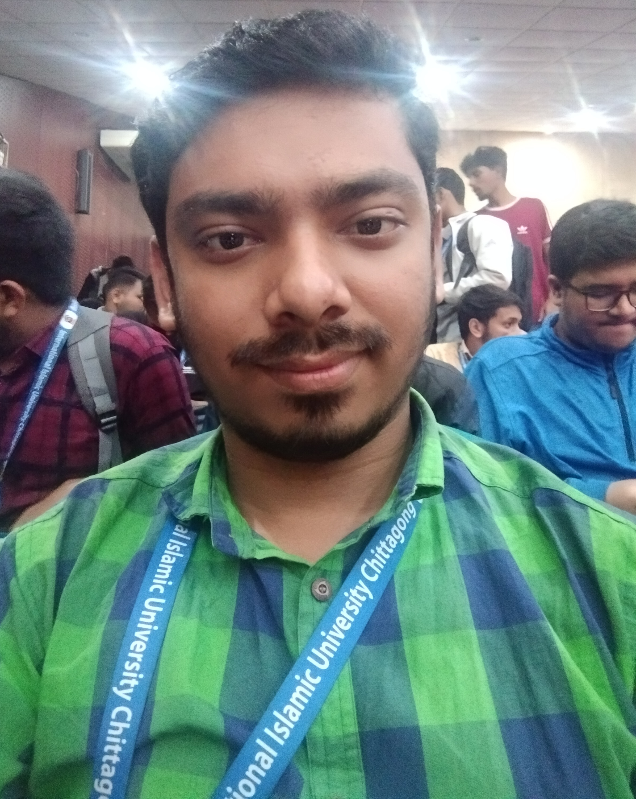

IIUC Canteen
IIUC Canteen is a digital platform designed to streamline food ordering on campus, providing a quick and easy interface for students to browse menus, place orders, and enjoy efficient delivery services.
I am a beginner web developer who loves to create simple and beautiful websites. I enjoy learning new skills and building projects that help people. My goal is to improve my development skills step by step and make websites that users find easy and fun to use.

I am passionate about web development, creating functional and attractive websites. Mathematics enhances my problem-solving skills, while artificial intelligence fascinates me with its potential to innovate and automate complex tasks
IIUC Canteen is a digital platform designed to streamline food ordering on campus, providing a quick and easy interface for students to browse menus, place orders, and enjoy efficient delivery services.
An Online Book Shop offers a wide variety of books accessible from anywhere, enabling users to browse, select, and purchase books conveniently with secure payment and home delivery options.
A Food Delivery App connects customers with local restaurants, offering real-time tracking, multiple payment methods, and user-friendly order management for fast and reliable meal deliveries.